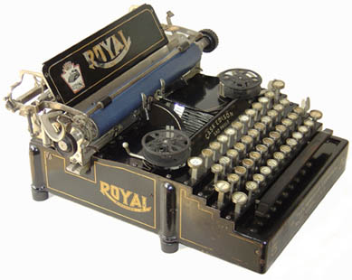

Az ütős nyomtató egy olyan nyomtató típus, amely az ütésszerű mechanikus hatást használja a nyomtatás során. A leggyakoribb példa erre a pontmátrix nyomtató, amelyben egy sor nyomtatófólián található tűk ütögetik a papírt, hogy karaktereket és képeket nyomtassanak rá. Ezek a nyomt
